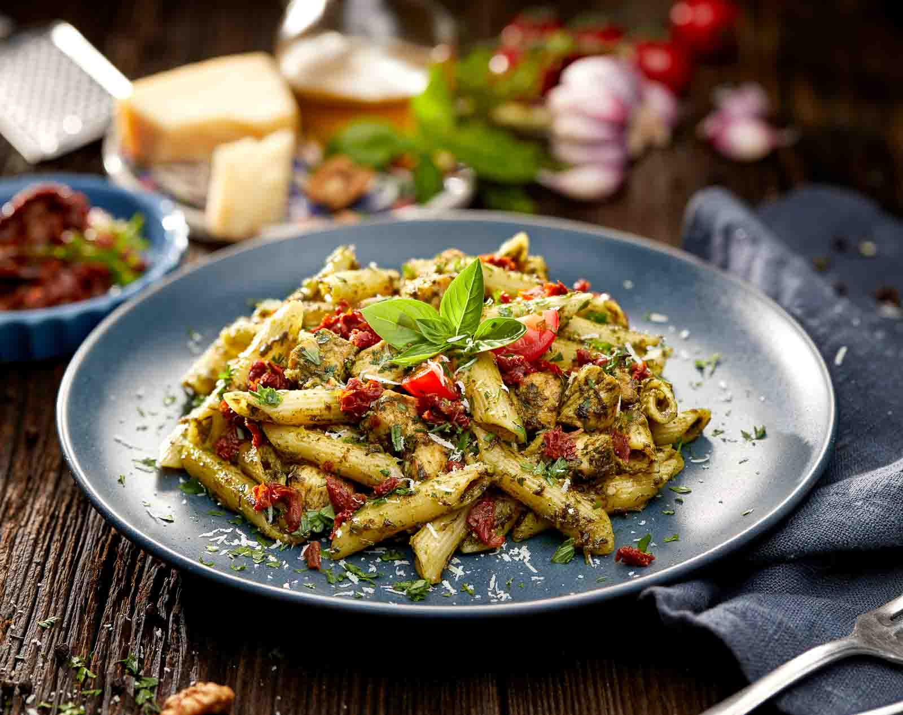

Pesto Penne Pasta

Description
Freshly cooked pasta with flavour when tossed
in pesto, fresh cherry tomatoes and parmesan
cheese.
It is best served fresh for an easy weeknight
dinner.
Ingredients
- penne pasta
- basil pesto
- cherry tomotoes
- parmesan cheese
- salt and pepper
Steps
- Bring a large pot of water to a boil over medium-high heat.
Add penne pasta and a little bit salt, and cook till al dente
(fully cooked but still firm) about 8-10 minutes, or according
to package directions. Do not overcook the pasta. Turn off the
heat and reserve at least ¼ cup of pasta water, then drain the
pasta in a colander and let it cool for 1 minute.
- Transfer pasta into a large mixing bowl and add pesto and
reserved pasta water (¼ cup or more, if desired). Season with
salt and pepper and toss well to coat. Stir in cherry tomatoes
and parmesan cheese.
- Serve immediately. Sprinkle extra parmesan on top, if desired.